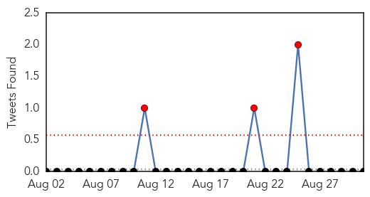
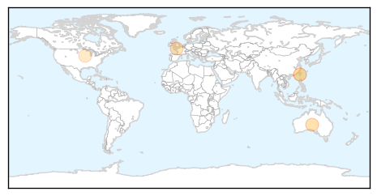

30 Day Trends
Web: 0 alerts, 0 warnings
Twitter: 3 alerts, 0 warnings
Top Articles:
- 0.961
- Work with farm animals? make sure you have a Q fever check
- 0.960
- Walgreens flu shot clinic to be offered at Senior Services Plus
- 0.884
- NJ Hospitals Vaccinate Employees Against Flu, with Mixed Results
- 0.844
- Nelson emergency department at full capacity
- 0.793
- Taiwan reports 1st brucellosis case since 2011, imported from Indonesia
- 0.651
- Farmers preparing for fall bird flu outbreak amid ongoing mystery
- 0.524
- Bird flu virus detected in southern Taiwan poultry farms
Top Tweets:
-
No tweets found for Aug 31, 2015
Web/News Articles

Tweets
Article Locations
Article Confidences